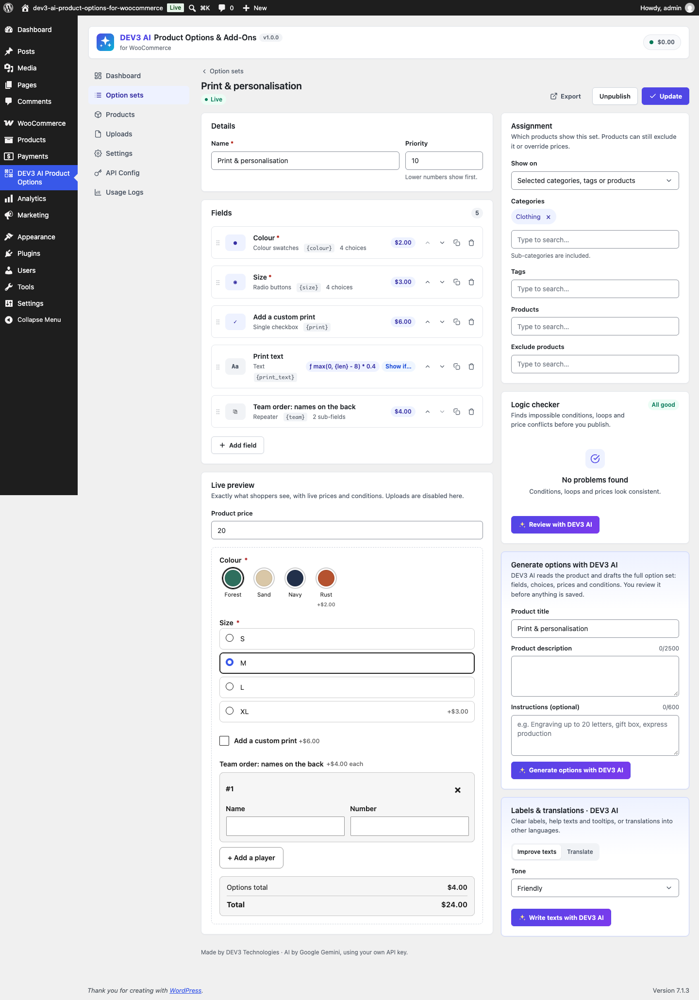
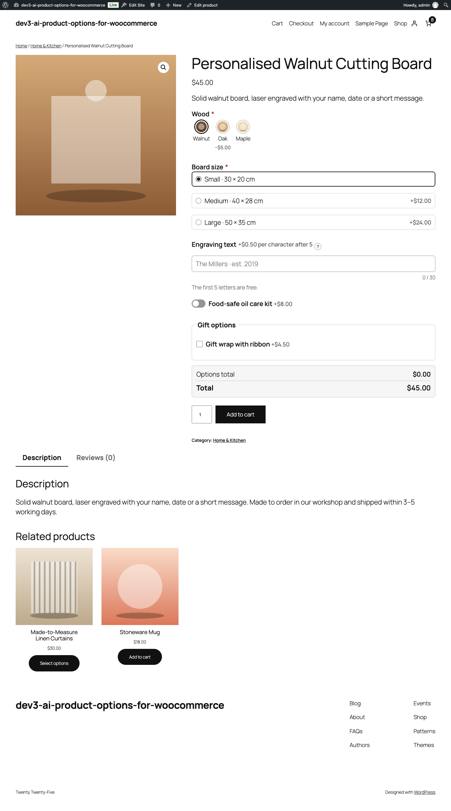
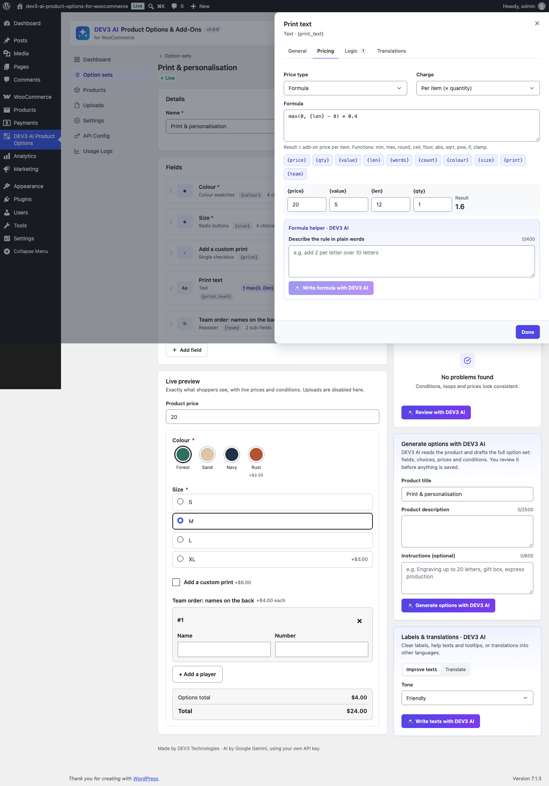

1. Installation
- Requirements: WordPress 6.0+, PHP 7.4+ (tested on 8.3), WooCommerce 8.0+.
- Plugins › Add New › Upload Plugin › choose
dev3-ai-product-options-for-woocommerce.zip› Install › Activate. - Open DEV3 AI Product Options in the admin menu. Shop managers and administrators can use it.
The plugin declares compatibility with WooCommerce HPOS (custom order tables) and the Cart/Checkout blocks.
2. Google Gemini API key (optional)
- Create a key at Google AI Studio.
- Paste it in API Config and press Validate. It is stored encrypted and never sent to the browser. You can also define
DEV3PO_GEMINI_API_KEYinwp-config.php. - Pick models (defaults
gemini-2.5-flash/gemini-2.5-pro), set a monthly budget cap, and switch storefront AI (upload vision) on or off.
Without a key every option, condition, price, upload and cart feature works. Only the "with DEV3 AI" buttons need a key. Each AI feature can be switched off in Settings.
3. Option sets and product options
Option sets are global groups of fields. Assign a set to all products or to categories (sub-categories included), tags and individual products, and exclude products. Lower priority numbers appear first. Only published sets apply. Publishing is blocked while the logic checker reports errors (you may "publish anyway").
Product options: open a product › DEV3 AI Options tab (saved with the product), or Products in the plugin. Modes: product fields + matching sets, only product fields, or no options. Per product you can switch off a matching set and override fixed prices of set fields and choices.
Sets can be exported/imported as JSON (Option sets › Export / Import).
4. Field types
| Group | Types | Settings |
|---|---|---|
| Text | Text, Textarea, Email, URL, Phone | placeholder, min/max length, default |
| Numbers | Number, Range slider | min, max, step, unit |
| Choices | Dropdown, Radio, Checkbox group, Colour swatches, Image swatches, Image picker, Single checkbox, Toggle | choices with label, value, price (flat or %), colour, image, default; max selections |
| Date & time | Date, Time, Date & time | earliest/latest (days from today), unavailable weekdays |
| Files & colour | File upload, Colour picker | types, max files, max MB, min width/height, DEV3 AI vision check + rule |
| Advanced | Hidden value | fixed value; useful for setup fees and formulas |
| Layout | Section, Step, Paragraph, Repeater | collapsible sections; steps make a wizard; repeater min/max entries and sub-fields |
Every field has a label, key (used in formulas), help text, tooltip, required flag and half/full width.
5. Conditional logic and the logic checker
Show or hide a field (or a whole section/step) when all or any rules match. Operators: is, is not, contains, does not contain, is empty, is not empty, greater/less than, at least/at most, is checked/not checked. A field that points at a hidden field sees an empty value. Hidden fields are never required and never priced.
The logic checker runs as you edit and reports: impossible rules (e.g. Size is S and M, Width > 50 and < 20, a value outside min/max, a choice that does not exist), circular dependencies (also through steps/sections), rules on deleted fields, formula syntax errors and unknown variables, division by zero, conflicting quantity tiers, duplicate choices with different prices, discounts of 100% or more, empty steps, choice fields without choices, min > max.
6. Pricing
| Price type | Result |
|---|---|
| Flat | fixed amount when the field is filled (per row for repeaters) |
| Percent | % of the product (or variation) price |
| Per character | price × characters after the free characters (spaces optional) |
| Per unit | price × the number entered (or number of files) |
| Quantity tiers | price per item from the tier matching the cart quantity |
| Formula | any formula, see below |
Charge: per item (added to the unit price) or once per cart line (added as a fee). The unit price never goes below 0.
Formulas
Operators + - * / % ^ ( ), comparisons == != > < >= <= (1 or 0), && || !, functions min max round(x,d) ceil floor abs sqrt pow if(c,a,b) clamp(x,lo,hi). Variables: {price}, {qty}, {value}, {len}, {words}, {lines}, {count}, and any field by key: {width}, {name.len}, {extras.count}. No eval is used; the same engine runs in PHP and JavaScript and both pass 127 shared fixture cases.
max(0, {len} - 10) * 2 2 per letter over 10
{width} * {height} / 10000 * 18 18 per m²
if({qty} >= 10, 1, 2) cheaper for 10+
7. Cart, checkout and orders
- Options and their prices appear in the cart, checkout (classic and blocks), order, emails and the order admin; uploaded files are links for shop staff.
- Shoppers edit options from the cart (product link / "Edit options"); the cart line is replaced.
- Different options create separate cart lines; "Order again" restores options.
- Shop/category buttons link to the product when a required option must be chosen (configurable).
8. Uploads
Files go to wp-content/uploads/dev3po-uploads/ with random names; Apache access is denied and staff download through a nonce-protected admin link. Allowed types are whitelisted (never SVG/HTML/PHP); content is checked against the extension. Minimum resolution is always checked. Tokens are bound to the visitor session. Files never ordered are deleted after the retention period. The Uploads screen lists every file with its check result.
9. DEV3 AI features
- Generate options (option set editor and product): drafts the full set as structured JSON, validated against a schema, normalised, and checked by the logic checker. Review the summary or edit the JSON, then add or replace fields.
- Review with DEV3 AI (logic checker): extra findings with suggestions, marked "DEV3 AI".
- Formula helper (field › Pricing › Formula): plain language to a validated formula, with worked examples. Invalid answers are retried once with feedback.
- Labels & translations: improve labels/help/tooltips in a tone, or translate them into a locale; translations are stored per field.
- Upload vision check: enable it on a file field and describe what the image must show. It runs through the rate-limited storefront proxy with caching; when AI is unavailable the upload is accepted as "not checked". Choose warn or block in Settings.
All AI usage is logged with tokens and estimated cost (Usage Logs) and respects the monthly cap.
10. Blocks, shortcode, Elementor and WPBakery
Options render automatically on product pages (classic and block themes). To place options + add to cart elsewhere use the block Product options & add to cart, the shortcode [dev3po_product_options id="123"] (omit the id on product templates), the Elementor widget of the same name, or the WPBakery element.
Styling: the form inherits your theme's fonts and colours. Override CSS variables on .dev3po-form: --dev3po-accent, --dev3po-accent-strong, --dev3po-line, --dev3po-tint, --dev3po-r, or set an accent colour in Settings.
11. Translations
The plugin is translation-ready (languages/dev3-ai-product-options-for-woocommerce.pot) and ships RTL styles. Field texts can be translated per locale in the field's Translations tab or with DEV3 AI. The locale comes from Polylang, WPML or WordPress (filter dev3po_locale).
12. Developer hooks and REST API
| Hook | Description |
|---|---|
dev3po_product_fields (filter) | fields shown for a product |
dev3po_set_saved (action) | after an option set is saved |
dev3po_locale (filter) | locale used for field translations |
dev3po_upload_extensions (filter) | allowed upload extensions |
dev3po_public_rate_limit (filter) | per-IP limit for public endpoints |
dev3po_prompt_<id> (filter) | override prompts: generate_options, review_logic, formula, labels, vision_check |
dev3po_ai_guard (filter) | block AI calls |
dev3po_manage_capability, dev3po_capability | capabilities (default manage_woocommerce, edit_products) |
REST namespace dev3po/v1 (cookie + nonce): sets, sets/<id>, sets/<id>/duplicate, sets/import, products, products/<id>, terms, check, preview, price, ai/generate, ai/review, ai/formula, ai/labels, uploads, stats; public upload (same-origin + rate limit). Order item meta _dev3po_data holds the values, fields and prices as an array.
13. FAQ
Variable products?
Yes. Options apply to the parent product; percent prices follow the selected variation price.
Taxes?
Option prices are entered like product prices and are taxed with the product's tax class.
Page caching?
The product form has no per-visitor data; uploads use a public endpoint that works with cached pages.
Uninstall?
Data is removed only when "Delete all plugin data when the plugin is uninstalled" is enabled in Settings › Cart & orders.
14. Changelog
1.0.0 – Initial release.